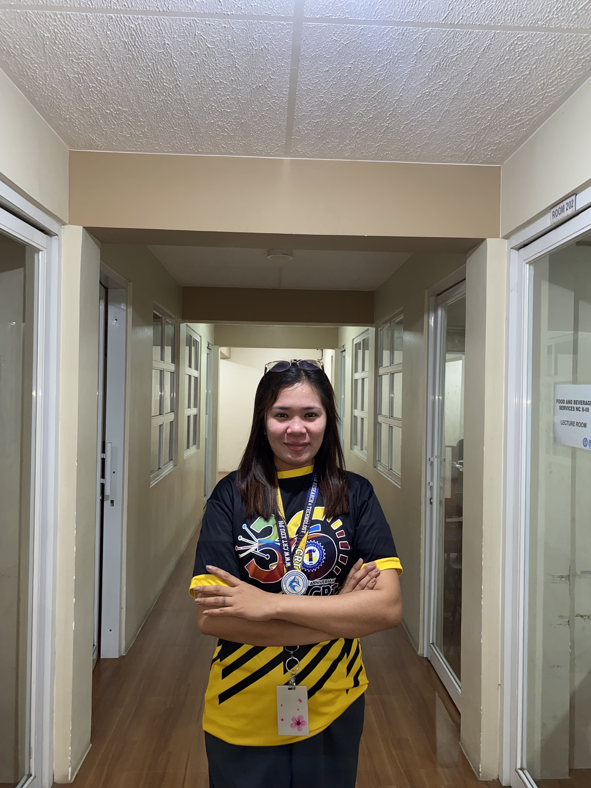
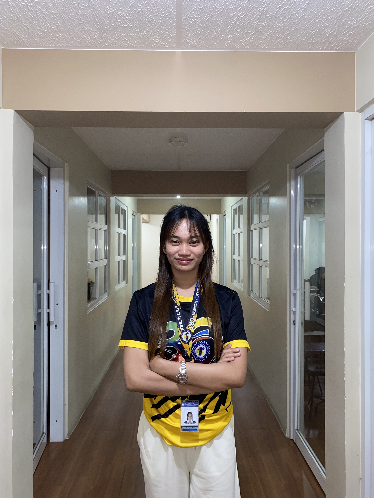
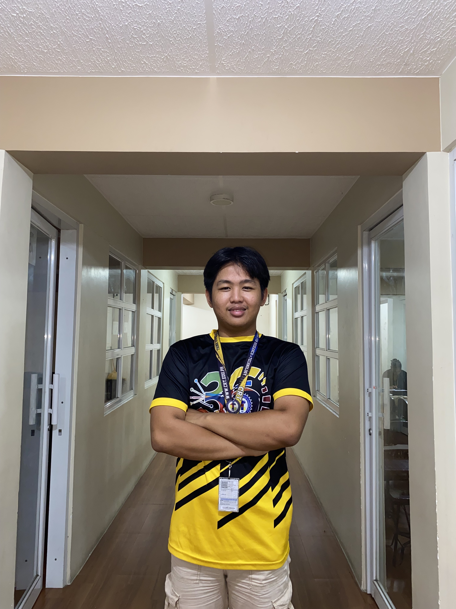
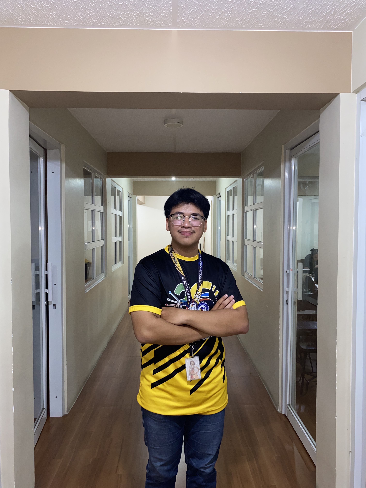
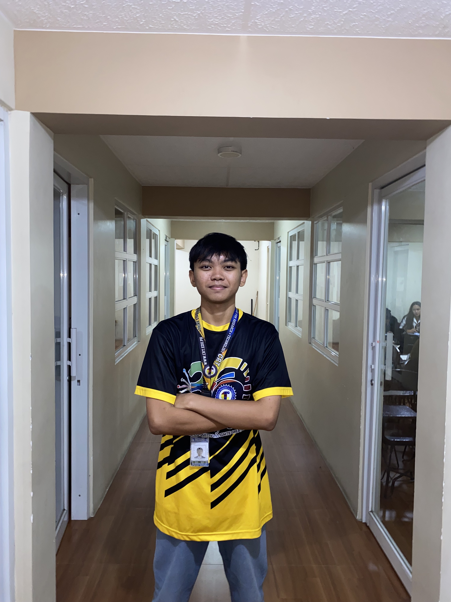
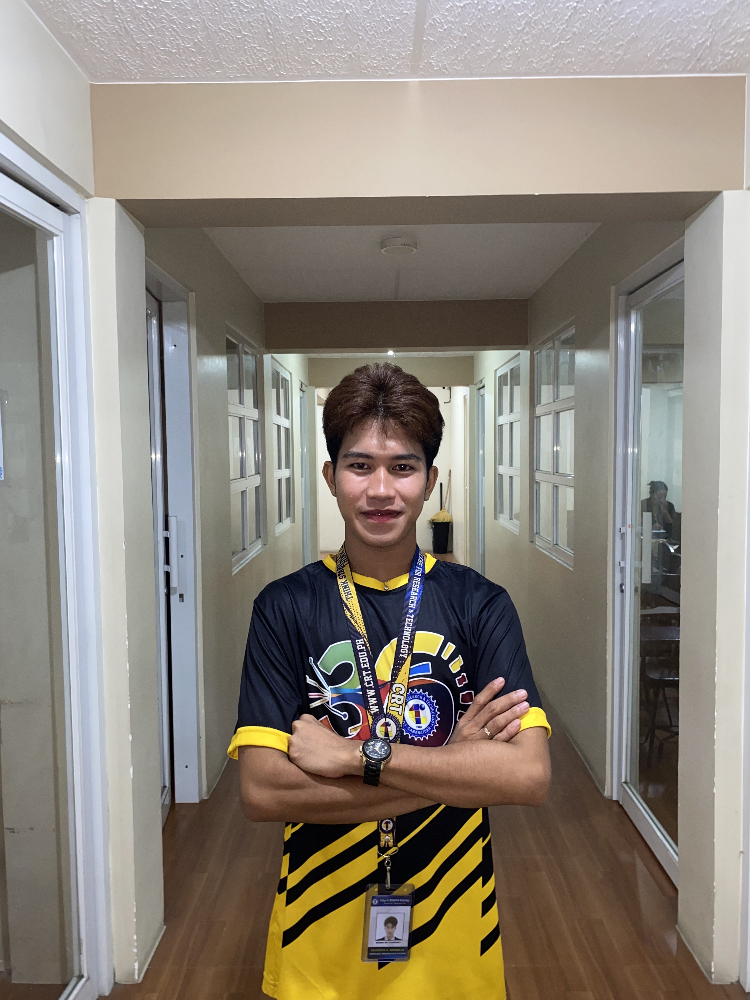

About Us
Our Team
We are 1st year IT students with a shared goal: to make ICT learning accessible, fun, and hands-on. This portal is the result of our teamwork and commitment to technical excellence.
Project Manager
Rowena Castillan
I lead the team and keep our goals clear. I manage progress and support every member to stay focused and united. “Leadership is about taking care of the team.”
Assistant Project Manager
Bea Catherine Mendoza
I help organize the team's work, monitor deadlines, and assist in decision-making. I support the Project Manager and ensure smooth collaboration. “Support is the backbone of leadership.”
Designer
Lorraine Joyce Ramos
I create clear and user-friendly layouts. I design with both function and beauty in mind. “Design is how it works.”
Designer
Monica Pineda
I focus on usability and visual style to make the interface feel modern and smooth. “Great design feels invisible.”
Researcher
Mike Justine Miranda
I gather important information and help guide our choices with relevant insights. “Research leads to new ideas.”
Developer
Mark Justine Esquivel
I code and ensure that every feature works as intended. “Solve the problem, then write the code.”
QA Tester
Lance Pantalunan
I test all features to ensure they function correctly and are bug-free. “Quality is never an accident.”
QA Tester
Armando Arenas Jr.
I ensure everything works and the user experience is polished. “Test early, test often.”
Our Mission
To support IT learners by providing a practical and digital learning platform aligned with modern ICT industry standards. IC-iT empowers students through guided activities and real-world simulations.
What is IC-iT?
IC-iT stands for "Install, Configure, and Implement Technology" — a digital educational portal designed to deliver outcomes-based, interactive IT learning. It covers essential ICT concepts from hardware basics to network and server configurations.